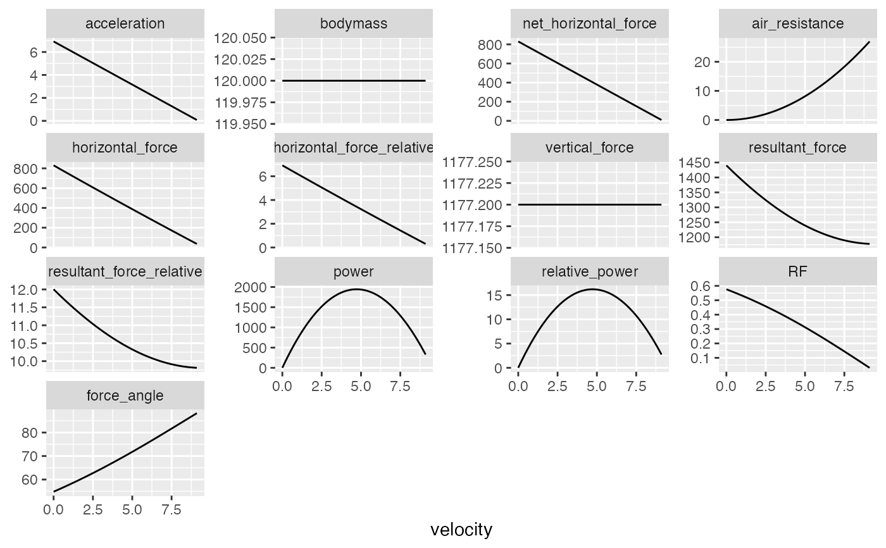

Provides Force-Velocity (FV) profile suggested by Pierre Samozino and JB-Morin, et al.
get_FV_profile( MSS, TAU, bodymass = 75, max_time = 6, frequency = 100, RFmax_cutoff = 0.3, ... )
Arguments
| MSS | Numeric vectors. Model parameters |
|---|---|
| TAU | Numeric vectors. Model parameters |
| bodymass | Body mass in kg. Used to calculate relative power and forwarded to |
| max_time | Predict from 0 to |
| frequency | Number of samples within one second. Default is 100Hz |
| RFmax_cutoff | Time cut-off used to estimate |
| ... | Forwarded to |
Value
List containing the following elements:
- bodymass
Returned
bodymassused in FV profiling- F0
Horizontal force when velocity=0
- F0_rel
F0divided bybodymass- V0
Velocity when horizonatl force=0
- Pmax
Maximal horizontal power
- Pmax_rel
Pmaxdivided bybodymass- FV_slope
Slope of the FV profile. See References for more info
- RFmax
Maximal force ratio after 0.3sec. See References for more info
- RFmax_cutoff
Time cut-off used to estimate RFmax
- Drf
Slope of Force Ratio (RF) and velocity. See References for more info
- RSE_FV
Residual standard error of the FV profile.
- RSE_Drf
Residual standard error of the RF-velocity profile
- data
Data frame containing simulated data used to estimate parameters
References
Samozino P, Rabita G, Dorel S, Slawinski J, Peyrot N, Saez de Villarreal E, Morin J-B. 2016. A simple method for measuring power, force, velocity properties, and mechanical effectiveness in sprint running: Simple method to compute sprint mechanics. Scandinavian Journal of Medicine & Science in Sports 26:648–658. DOI: 10.1111/sms.12490.
Examples
data("jb_morin") m1 <- model_using_radar_with_time_correction(time = jb_morin$time, velocity = jb_morin$velocity) fv_profile <- get_FV_profile( MSS = m1$parameters$MSS, TAU = m1$parameters$TAU, bodyheight = 1.72, bodymass = 120) print(fv_profile)#> Estimated Force-Velocity Profile #> -------------------------- #> bodymass F0 F0_rel V0 Pmax #> 1.200000e+02 8.225498e+02 6.854581e+00 9.505432e+00 1.954673e+03 #> Pmax_relative FV_slope RFmax_cutoff RFmax Drf #> 1.628894e+01 -7.211225e-01 3.000000e-01 4.909433e-01 -6.629983e-02 #> RSE_FV RSE_Drf #> 1.748288e+00 4.951049e-03